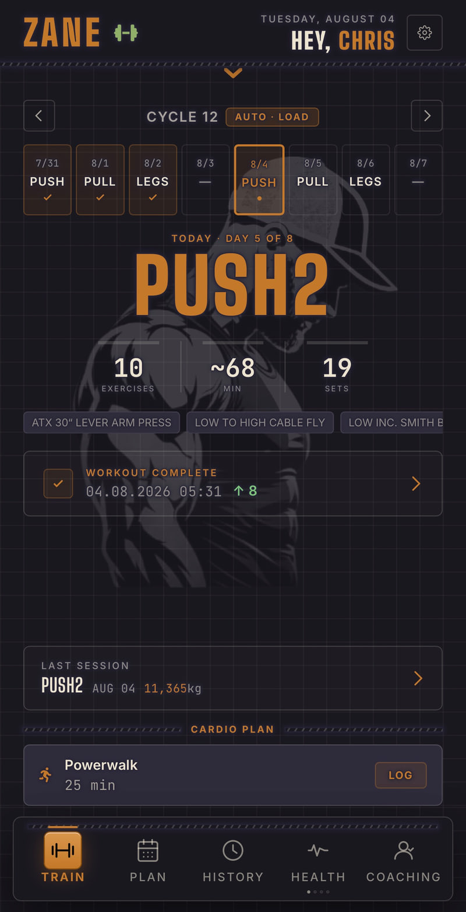
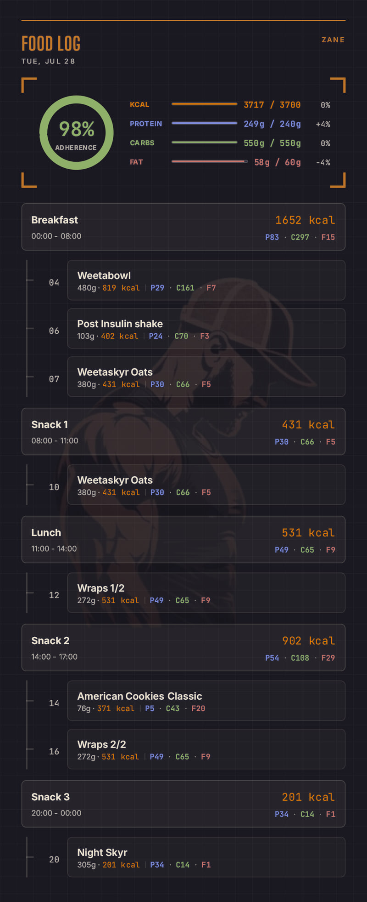
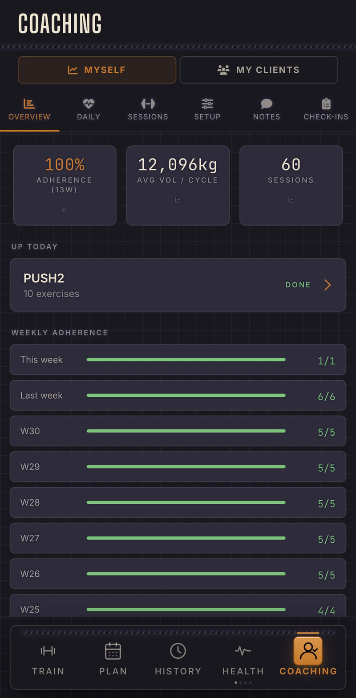
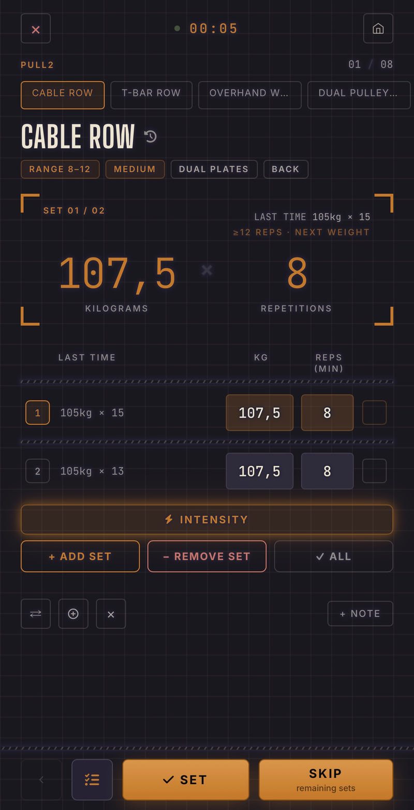
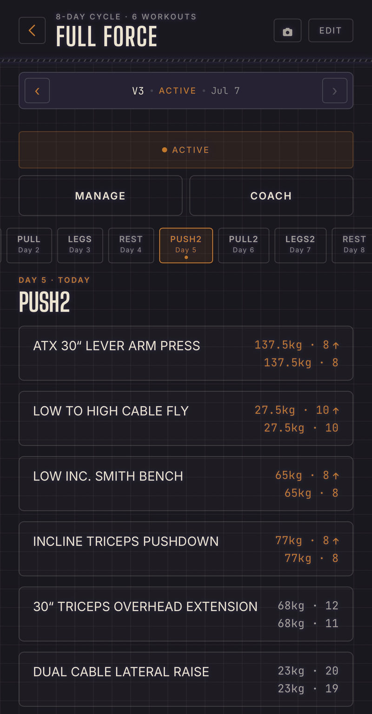
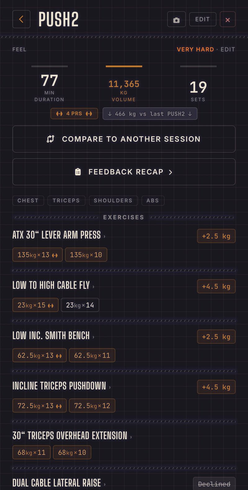
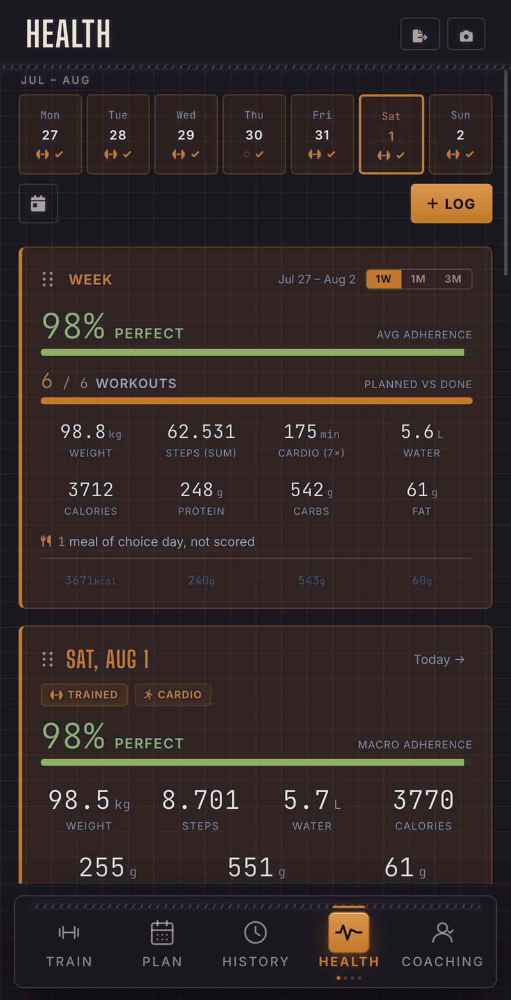

Train with Zane
or remain the same
Build the plan, log every set on the gym floor, and let the next session adjust to how the last one actually felt. Zane holds the whole picture in one place, from the working set to the shopping list, and syncs it across every device you own.
Free, no card, nothing to cancel. Runs in your browser, installs to your home screen.

Most lifters run a plan in one app, a food diary in another, and a notes file for how it all actually felt. Zane is built on the idea that those are the same dataset, and that the interesting parts only show up when they sit next to each other.
Five ready-made splits, Wendler's 5/3/1 off your training max, or a guided setup that builds your own week. Fixed weekdays, a rotating cycle, or fully flexible.
A lifting keypad built for chalky thumbs. Drop sets, myo-reps, lengthened partials and supersets you can link mid-workout, a plate calculator that knows which plates you own, and rest timers that reach you with the screen locked.
Weight and steps in a daily log, with water and macros filling themselves in from their own trackers. Plus glucose, blood pressure, temperature, medications and cardio.
A coach writes plans, macro targets and protocols straight into your app, and can watch a session as it happens. What you logged, they read but never rewrite.
Everything on this page is free right now. Not a trial with a timer running behind it, not a stripped-down tier with the good parts locked. The whole app.
Every feature, for everyone, with no card on file and nothing to cancel.
The first 75 people to properly use Zane keep it free permanently. Not free until the pricing lands, not a discount on it: lifetime premium, whatever premium turns out to mean. Every paid feature that ever exists is already yours, and nothing about your account changes on the day the rest of the world starts paying.
You do not sign up for it or enter a code. Train, and the seat is yours.
Five completed workouts, on separate days, with real training behind them. Actually using the app, not just creating an account, because the point is to reward the people who help shape it while it is still being built.
When Zane starts charging, coaches will buy client seats rather than every lifter paying separately. If you train with a coach inside the app, your seat comes out of theirs. Nothing is asked of you, and nothing changes about what you can do.
If the coaching relationship ends, the account stays yours either way. Take over the seat yourself, or drop back to the free side and keep training. Your history does not move, and nothing gets locked behind you.
Zane asks how the muscle recovered, how the weight felt, and how big the pump was. Nothing to report? One button answers all of it. From that, your next session on that day gets its own set count and its own weight, landing on individual exercises and rotating fairly across the muscle group.
Training is the easy half. The food tracker reads barcodes and nutrition labels, turns a typed description or a photo of your plate into an estimate you check before it lands, and remembers what you eat so logging it again is a tap and a confirm.

Coaching in Zane is not a chat window bolted onto a log. Your coach invites you by email, you accept inside the app, and from then on they work with the real thing: your plans, your targets, your history.

Thumb-sized keys and contrast tuned per theme, because a gym is not a desk. Four themes, ten accent colors, and your entire history exports to a single file you own.




On iPhone and iPad, push notifications only work once Zane is installed this way and switched on in Settings.
No app store, no download, no credit card. Zane runs in your browser and installs from there.
Already have an account? The same link signs you in.